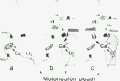

PDF
(93 KB)
PDF
(93 KB)

▪ Abstract New discoveries are expanding our knowledge of mechanisms involved in amyotrophic lateral sclerosis (ALS) pathogenesis. Some recent advances in our understanding of motoneuron death in familial ALS (fALS) and sporadic ALS (sALS) are reviewed, with emphasis on molecular similarities that may further unite these phenotypically linked diseases.
New discoveries are expanding our knowledge of mechanisms involved in amyotrophic lateral sclerosis (ALS) pathogenesis. Some recent advances in our understanding of motoneuron death in familial ALS (fALS) and sporadic ALS (sALS) are reviewed, with emphasis on molecular similarities that may further unite these phenotypically linked diseases.
Amyotrophic lateral sclerosis (ALS) is a progressive, devastating syndrome that affects both upper and lower motoneurons and results in limb and facial motor weakness, atrophy, spasticity, and death (1, 2, 3). The age-adjusted worldwide incidence of ALS is 0.5–3 per 100,000 person years (without obvious race-related differences). Older males and postmenopausal females are most typically affected (3, 5). Familial ALS (fALS) accounts for less than 10% of diagnosed cases (3, 6, 7, 8), with sporadic ALS (sALS) comprising the remainder of diagnoses. Although the pathogenesis of ALS remains unknown, notable progress has been made in identifying molecular processes potentially involved in ALS-mediated motoneuron injury. This chapter reviews some of these recent advances in our understanding of the molecular bases of sALS and fALS.
A significant discovery in ALS research was the identification of a genetic defect associated with 10–15% of fALS kindreds (7). The involved gene, SOD1, encodes a cytosolic form of superoxide dismutase (SOD), and identified mutations in exons 1, 2, 4, and 5 of the SOD1 gene all appear to reduce Cu2+/Zn2+ SOD stability and SOD-catalyzed free-radical metabolism (8, 9).
Differences in the location of these missense mutations apparently affect both clinical fALS severity and measured SOD activity levels. For example, a very slowly progressive form of fALS in two Japanese kindreds is associated with a His46 → Arg point mutation on the SOD molecule. This mutation may alter Cu2+ binding to the enzyme's catalytic site and reduces erythrocyte lysate SOD activity by approximately 20% (10). In Caucasian fALS kindreds with rapid rates of clinical disease progression, many SOD1 mutations instead code for the dimer contact region and appear to destabilize SOD dimer formation. Two such point mutations (Ala4 → Val and Gly41 → Ser) produce an enzyme with less than 50% of normal Cu2+/Zn2+ SOD activity (11), and death of affected patients occurs after less than one year of symptom onset (11, 12).
To understand ALS pathogenesis, one must understand how altering SOD activity can induce cell injury. SOD protects against direct superoxide anion (O2•−)-induced cell damage by reducing [O2•−]i; hence, reduced Cu2+/Zn2+ SOD activity in patients with fALS equates to increased steady-state levels of [O2•−]i (13). However, O2•− is also readily converted to other, more toxic radicals. For example, O2•− can be converted to the highly destructive hydroxyl radical (OH•) in the presence of elemental iron. Moreover, it interacts with nitric oxide to form peroxynitrite (ONOO−) (14), which can disrupt lipid bilayers and oxidize protein methionine residues and thiols (15). Peroxynitrites also react with SOD to form nitronium-like molecules, which modify tyrosine residues (16). Peroxynitrites are also protonated to form nitrosyl radicals, which decompose to OH• (17).
To attempt to recreate SOD-associated fALS in vitro, some researchers have directly blocked cellular SOD activity in culture systems. Inhibition of Cu2+/Zn2+ SOD in cultured rat spinal cord slices with SOD1 antisense oligodeoxynucleotides leads to apoptotic degeneration of most spinal neurons (including motoneurons) within several weeks (18). However, SOD may be essential to aerobic life (19), and significant enzyme inhibition may likewise be injurious to all cells.
A more specific approach has been to test the phenotypic and biochemical consequences of SOD1 gene insertion into transgenic mice. Overexpression of normal SOD1 resulted in increased lipid peroxidation (20) and distal tongue and hindlimb motor deficits (21) in such mice, but these changes may have been caused by overproduction of H2O2 by SOD, with a subsequent paradoxical increase in [OH•] synthesis. Expression in transgenic mice of human fALS SOD1 (containing Gly93 → Ala or Ala4 → Val missense mutations) produced more obvious paralytic disease in these animals, who developed asymmetric weakness by three to four months of age and died within six months (22). Pathologically, selective lower motoneuron loss and sprouting of remaining neurons were observed in these animals, without upper motoneuron deficits. However, without endogenous mouse SOD1 gene knockout prior to transfection with mutant human SOD1, SOD activity levels measured in transfected mice were again 50–400% higher than those observed in nontransfected control mice. Thus, gain-of-function SOD1 mutations indicate that increased SOD activity in the presence of mutant enzyme is associated with rapidly progressive lower motoneuron disease, but they do not yet show whether reduced SOD activity by mutant SOD1 causes a similar process or, consequently, how this mouse transgenic model relates to human fALS SOD defects.
Because the clinical syndromes of fALS and sALS are quite similar, it has been suggested that the mechanisms of cell injury are similar as well. However, although reduced Cu2+/Zn2+ SOD activity was observed in fALS patients with mutant SOD1, no SOD activity changes occurred in other ALS patients (23, 24, 25, 26). Subtle forms of oxidative damage have nevertheless been observed in postmortem tissues from sALS patients (24, 25, 27, 28). This finding implies that radical-mediated cellular injury may also occur in sALS pathogenesis and contribute to a final common pathway of motoneuron loss.
The theory that sALS is caused by glutamate-induced excitotoxic injury was derived from two sets of observations. First, epidemiologic studies of Western Pacific ALS (ALS-Parkinsonism-dementia complex) implicated a toxin possibly derived from cycad seed flour (29). One of these toxins, β-N-methylamino-l-alanine (BMAA), has a structure similar to that of glutamate (30) and has neurotoxic effects similar to those of β-oxalylamino-l-alanine (BOAA, the cause of lathyrism) when added to CNS explant cultures (31, 32). However, reports that l-BMAA induced an ALS-like illness in monkeys (33) remain unconfirmed (34), and l-BMAA levels present in washed cycad flour ingested by Chamorro Indians appear to be much lower (35) than those needed to produce other toxic effects in animal models (36) or in vitro. Furthermore, the incubation period of Western Pacific ALS is not consistent with the known effects of l-BMAA (37).
Second, tissue glutamate levels (38, 39) and glutamate transport activity (40) are reduced in spinal cords in patients with sALS. Because glutamate and glutamate receptor agonists induce neuronal death in vitro and in vivo (37, 41), these data have suggested to some researchers that motoneuron death in sALS results from prolonged exposure to elevated glutamate concentrations. Others have countered that these data simply reflect glutamatergic cell loss mediated by other mechanisms (42), without invoking excitotoxic injury as the primary mechanism responsible for sALS. Certainly, the rapid time course for excitotoxic cell injury is not compatible with slow motoneuron loss in ALS, unless another process chronically triggers glutamate release.
However, although clinical data implicating glutamate in sALS pathogenesis are limited, alterations in glutamate levels result in motoneuron loss in vitro. For example, chronic inhibition of glutamate uptake in organotypic rat spinal cord cultures produced both an increase in extracellular glutamate concentrations and motoneuron degeneration, which was mediated by activation of α-amino-3-hydroxy-5-methyl-4-isoxazole propionic acid (AMPA)-sensitive glutamate receptors (43). Moreover, glutamate may induce cell death in part by increasing O2•− concentrations. Following stimulation of N-methyl-D-aspartate (NMDA)-sensitive glutamate receptors in cerebellar granule cells, O2•−-activated death was dependent on calcium (Ca2+) and release of arachidonate and was reduced by trapping O2•− (44). Additionally, apoptotic death of cultured rat spinal neurons induced by SOD inhibition could be greatly potentiated by concomitant block of glutamate transport and reduced by addition of AMPA receptor antagonists (18). Therefore, glutamate can certainly induce motoneuron death in a process initiated by receptor-operated calcium channel (ROCC) activation.
Until recently, evidence for an autoimmune etiology of sALS was largely clinical. sALS patients have an increased incidence of autoimmune disease (2), paraproteinemias (45, 46, 47), and serum monoclonal immunoglobulins (48), although the lack of motoneuron-specific antibodies in patients with monoclonal gammopathy suggests that such changes are a general manifestation of altered immune function. Likewise, increased cellular immunity to poliovirus (49, 50), myelin basic protein (50), and other CNS protein species (50, 51) may be a secondary phenomenon (52). However, the presence of circulating immune complexes and immune complex deposition in kidneys (49, 53, 54, 55) of sALS patients; the postmortem identification of extracellular immunoglobulin and complement deposition at the neuromuscular junction, motor cortex, and spinal cord (56); and IgG internalization within motoneurons (57) of sALS patients all suggest alterations observed in autoimmune disease.
Two distinct guinea pig models and a rabbit model for immune motoneuron disease have been reported. These models indicate the potentiality for selective immune-mediated motoneuron loss in humans (see Figure 1). Lower motoneuron disease in guinea pigs was induced by inoculation of purified bovine spinal cord motor neurons (58), while both upper and lower motoneuron degeneration was caused by inoculation of bovine spinal cord ventral horn homogenates (59). In contrast, rabbit motoneuron loss was induced by injection of motoneuron hybrid cell homogenates (60). High serum antibody titers to motoneurons, IgG precipitates at neuromuscular junctions and in motoneurons (57), and inflammatory cells within the spinal cord (61) were all documented in guinea pig models. Pathological studies showed motoneuron loss in immunized animals, while electrophysiologic tests documented increased resting acetylcholine (ACh) release from remaining motor nerve terminals.
|  |
| Figure |
IgG from sALS patients and guinea pig models also passively transferred physiologic changes to mouse neuromuscular junctions (62). Increased ACh release was observed from motor nerve terminals of mice injected with guinea pig model IgG or human sALS IgG, but not with control IgG. In such mice, passively transferred IgG histochemically localized to motoneurons and neuromuscular junctions (62), whereas chronic ALS IgG injections induced axonal degeneration (63).
Because ACh release at neuromuscular junctions is dependent upon voltage-gated calcium channel (VGCC) activation and increased intracellular Ca2+ concentrations (64, 65), enhanced ACh release might ensue from immune-mediated increases in VGCC currents and presynaptic intracellular Ca2+ levels. Early electrophysiologic studies tested this hypothesis on L-type VGCCs but demonstrated reduced L-type Ca2+ currents and charge movement following sALS IgG or Fab fragment addition to L-type VGCCs in myotubes (66, 67, 68, 69) and VGCCs inserted in lipid bilayers (70). Recently, however, sALS IgG was shown to increase P-type Ca2+ currents in cerebellar Purkinje cells (71) and adrenal cells (72) and to increase N-type Ca2+ currents expressed in oocytes (73). Since P- and N-type VGCCs couple mammalian neuromuscular junction Ca2+ entry to ACh release, these data may explain increased miniature end plate potential (MEPP) rates observed after sALS IgG transfer.
L-type VGCC antibodies were also biochemically identified by enzyme-linked immunoadsorbent assay in sera from 75% of sALS patients. Antibody titers appeared to correlate with ALS progression rate (74). In Western immunoblot, sALS IgG reacted only with the ionophore-containing α1-subunit of the VGCC (76). Although patients with Lambert-Eaton myasthenic syndrome (another VGCC-directed autoimmune disease) also possessed anti-VGCC antibodies, their antibodies reacted with both VGCC α1- and β-subunits in immunoblot. IgG from patients with fALS and other neurologic diseases did not contain immunoreactive antibodies.
To determine whether sALS IgG could augment VGCC-mediated Ca2+ currents and affect survival in motoneurons, a motoneuron-neuroblastoma hybrid cell line (VSC 4.1) was produced using techniques that had formerly yielded a substantia nigra cell line (76) and other motoneuron lines (60, 77). In physiological experiments using whole cell patch-clamp of cyclic adenosine monophosphate (cAMP)-differentiated VSC 4.1 cells, sALS IgG significantly increased high-threshold VGCC currents (78). Furthermore, using confocal scanning microscopy and the Ca2+-sensitive dye Fluo-3, sALS IgG-mediated Ca2+ entry into VSC 4.1 cells was found to follow two patterns (79). A fast transient increase was observed within 15–120 s of IgG addition, and a second, slower progressive increase was found within 4 h of the initial transient in one third of cells.
When sALS IgG was added to cAMP-treated VSC 4.1 cells, significant cell loss was observed after two to three days (80). This sALS IgG-mediated cytotoxicity can be prevented by 1000-fold reduction of extracellular [Ca2+] with ethylene glycol-bis(β-amino ethyl ether)N,N,N,N′-tetraacetic acid (EGTA), by preincubating immunoglobulins with purified intact L-type VGCC or with VGCC α1-subunit (but not with other VGCC subunits), or by preincubating cells with inhibitors of N- and P-type VGCCs (but not with inhibitors of dihydropyridine-sensitive L-type VGCCs). Observed cell death was apoptotic, and DNA fragmentation and laddering were observed within 12 h of sALS IgG addition. Cell blebbing and fragmentation began shortly thereafter (81). sALS IgG-induced apoptosis can be prevented by previous incubation with the endonuclease inhibitor aurintricarboxylate or with the protein synthesis inhibitor cycloheximide, but not by inhibitors of glutamate receptors.
Although questions remain as to how such data relate to ALS, these apparently different directions in ALS research converge in several significant areas, thus providing important clues to the mechanisms involved in motoneuron injury and death. First, early changes in Ca2+ homeostasis are hypothesized to occur in sALS pathogenesis. VGCC activation by sALS IgG reduces motoneuron hybrid survival in vitro, while ROCC activation by glutamate reduces motoneuron survival in vitro. However, although glutamate-mediated cytotoxicity might result from reduced glutamate transport, Ca2+ entry into presynaptic terminals of glutamatergic neurons contacting motoneurons (82, 83) might also be induced by sALS IgG. This entry of Ca2+ in turn would increase glutamate release, activate motoneuron ROCCs, and add to motoneuron damage caused by VGCC-mediated Ca2+ entry. Although glutamate receptor antagonists did not block sALS IgG-mediated cytotoxicity in VSC 4.1 cells, VGCC activation has been implicated in the regulation of excitotoxic ligand-gated ion channel function (84), in intracellular Ca2+ homeostasis, and in neuronal survival (85, 86, 87, 88). Thus, sALS IgG may trigger motoneuron death both by VGCC activation and by enhancing glutamate release and activating motoneuron excitotoxic ROCCs. This cytotoxicity may be triggered by transient rather than sustained Ca2+ entry (79, 89), suggesting that Ca2+ acts as a signal initiating a cell death cascade.
Second, at least in vitro, activation of VGCCs by sALS IgG or of ROCCs by glutamate induces a cascade of cellular mechanisms leading to endonuclease activation and apoptotic motoneuron death. Since prolonged Ca2+ entry occurs prior to DNA fragmentation in both processes, Ca2+ entry may be an important initiating factor for apoptosis. However, much remains to be determined about the specific steps involved in this process.
Third, this final common pathway may involve free radical-mediated cell injury. Both SOD-associated fALS and in vitro glutamate-induced motoneuron death document increased intracellular levels of O2•− resulting from reduced SOD activity. Although not yet tested with sALS IgG in motoneuron hybrids, VGCC activation and increased intracellular Ca2+ have been shown to increase mitochondrial activity (90) and oxidative injury (91, 92), and Ca2+ chelators can prevent H2O2−-induced DNA breakdown and cytotoxicity (93). Because oxidative stress may also increase release of Ca2+ from intracellular stores, activate endonucleases, and induce DNA fragmentation (94), the role of free radicals in apoptosis may likewise be substantial. However, endonuclease activation is not a final step in this process because stimulation of poly[adenosine diphosphate (ADP)-ribose] synthetase after radical- or endonuclease-induced DNA strand breakage can cause nuclear protein polyribosylation and cell death by depletion of β-nicotinamide adenine dinucleotide and adenosine triphosphate (ATP) (95).
Even with our current understanding of ALS pathogenesis, a number of questions must still be addressed. First, we need to understand how selective cell vulnerability arises in this and other forms of neurodegeneration. In ALS, such selectivity may in part rely on functional differences in protective mechanisms present in different cell types. For example, the calcium-binding proteins calbindin-D28K and parvalbumin are absent in motoneurons lost early in ALS (i.e. cortical and spinal motoneurons and lower cranial nerve motoneurons) but are present at high immunoreactive levels in motoneurons damaged late or infrequently in the disease (i.e. Onuf's nucleus motoneurons and oculomotor, trochlear, and abducens nerve neurons) (96, 97). In addition, undifferentiated VSC 4.1 cells are far more resistant to cytotoxic effects of sALS IgG than are cAMP-differentiated cells. This finding is consistent with the presence of much higher immunoreactive calbindin and parvalbumin levels in undifferentiated VSC 4.1 cells (97). Thus, cell-specific differences in regulatory protein activity may help explain selective motoneuron vulnerability in ALS.
Second, we need to understand how neurodegeneration progresses over the years. While transgenic mouse models may eventually help us explain the impact of SOD mutations in fALS, no good models yet exist with which to examine the potential slow effects of autoimmunity or excitotoxicity on motoneuron death in sALS.
Finally, we as physicians must learn to more effectively treat patients with ALS. We are only now beginning to understand ALS pathogenesis, and therapies based on such knowledge are therefore limited. As for most endocrine diseases, treatment of ALS with conventional immunosuppressants has not stopped disease progression, perhaps because it is too little, too late. Indeed, type I diabetes mellitus, which is also resistant to standard immunosuppressant therapy, may result from pancreatic islet cell destruction initiated by antibody-mediated increased Ca2+ entry through L-type VGCCs (98). Thus, treatments that affect the consequences of initial cell injury may be necessary to protect motoneurons in patients with ALS. Unfortunately, therapies designed to reduce excitotoxic cell injury are often associated with significant side effects, although medicines such as riluzole (99) are currently being tested. Although available antioxidants (1-deprenyl, α-tocopherol, vitamins A and C, etc) have not prevented ALS disease progression, new therapies that protect against oxygen radical formation are presently under development. Antiapoptotic agent use is also in its infancy, but its treatment potential for this disease will hopefully soon be assessed. In addition, because they protect motoneurons, various growth factors [insulin-like growth factor I (IGF-I) and brain-derived neurotrophic factor (BDNF)] are currently under investigation to determine their effectiveness in treating ALS. Still, until definitive remedies and gene therapies are available, helping ALS patients remains a considerable challenge for clinicians (100).
In summary, exciting discoveries are revolutionizing our understanding of the mechanisms involved in ALS pathogenesis and motoneuron death. These ideas are being applied to other neurodegenerative diseases as well and will eventually permit the development of effective therapy.
 1Proposed mechanisms for motoneuron loss in ALS. (a) Mutant SOD-associated familial ALS. Increaased intracellular O2•− results from decreased cytosolic SOD activity, and secondarily induces calcium release from internal stores and cell death. (b) Excitotoxic injury and sporadic ALS. Ostensibly the result of reduced glutamate uptake (GluT), increased levels of extracellular glutamate (Glu) would activate receptor-operated Ca2+ channels (ROCCs), increase Ca2+ entry, and secondarily induce oxidative injury and cell death. (c) Autoimmunity in sporadic ALS. Most sALS patients have antibodies directed against voltage-gated Ca2+ channels (VGCCs), which augment Ca2+ entry into motoneurons and may secondarily activate oxidative injury and cell death. Anti-VGCC antibodies also may increase presynaptic glutamate release onto motoneurons to produce secondary excitotoxic injury.
1Proposed mechanisms for motoneuron loss in ALS. (a) Mutant SOD-associated familial ALS. Increaased intracellular O2•− results from decreased cytosolic SOD activity, and secondarily induces calcium release from internal stores and cell death. (b) Excitotoxic injury and sporadic ALS. Ostensibly the result of reduced glutamate uptake (GluT), increased levels of extracellular glutamate (Glu) would activate receptor-operated Ca2+ channels (ROCCs), increase Ca2+ entry, and secondarily induce oxidative injury and cell death. (c) Autoimmunity in sporadic ALS. Most sALS patients have antibodies directed against voltage-gated Ca2+ channels (VGCCs), which augment Ca2+ entry into motoneurons and may secondarily activate oxidative injury and cell death. Anti-VGCC antibodies also may increase presynaptic glutamate release onto motoneurons to produce secondary excitotoxic injury. - ...These models indicate the potentiality for selective immune-mediated motoneuron loss in humans (see Figure 1)....
- 1.Rowland LP. 1985. Motor neuron diseases and amyotrophic lateral sclerosis. Trends Neurosci. 7:110–12
- 2.Appel SH, Stockton-Appel V, Stewart SS, et al. 1986. Amyotrophic lateral sclerosis: associated clinical disorders and immunologic evaluations. Arch. Neurol. 43:234–38
- 3.Norris F, Shepherd R, Denys E, et al. 1993. Onset, natural history, and outcome in idiopathic adult motor neuron disease. J. Neurol. Sci. 118:48–55
- 4.Annegers JF, Appel SH, Lee R-J, et al. 1991. Incidence and prevalence of amyotrophic lateral sclerosis in Harris County, Texas, 1985–1988. Arch. Neurol. 48:589–93
- 5.Ringel SP, Murphy JR, Alderson MK, et al. 1993. The natural history of amyotrophic lateral sclerosis. Neurology 43:1316–22
- 6.Mulder DW, Kurland LT, Offard KP, et al. 1986. Familial adult motor neuron disease: amyotrophic lateral sclerosis. Neurology 36:511–17
- 7.Siddique T, Figlewicz D, Pericak-Vance MA, et al. 1991. Linkage of a gene causing familial amyotrophic lateral sclerosis to chromosome 21, and evidence of genetic locus heterogeneity. New Engl. J. Med. 324:1381–84
- 8.Rosen DR, Siddique T, Patterson D, et al. 1993. Mutations in Cu/Zn superoxide dismutase gene are associated with familial amyotrophic lateral sclerosis. Nature 362:59–62
- 9.Deng H-X, Hentati A, Tainer JA, et al. 1993. Amyotrophic lateral sclerosis and structural defects in Cu,Zn superoxide dismutase. Science 261:1047–51
- 10.Ogasawara M, Matsubara Y, Narisawa K, et al. 1993. Mild ALS in Japan associated with novel SOD mutation. Nat. Genet. 5:323–24
- 11.Siddique T, Juneja J, Caliendo J, et al. 1994. Spectrum of the phenotype in familial ALS with SOD1 mutations. Neurology 44 (Suppl. 2):A165(Abstr.)
- 12.Rainero I, Pinessi L, Tsuda T, et al. 1994. SOD1 missense mutation in an Italian family with ALS. Neurology 44:347–49
- 13.Olanow CW. 1993. A radical hypothesis for neurodegeneration. Trends Neurosci. 16:439–44
- 14.Huie RE, Padmaja S. 1993. The reaction of NO with superoxide. Free Radic. Res. Commun. 18:195–201
- 15.Koppenol WH, Moreno JJ, Pryor WA, et al. 1992. Peroxynitrite, a cloaked oxidant formed by nitric oxide and superoxide. Chem. Res. Toxicol. 5:834–42
- 16.Beckman JS, Ischiropoulos H, Zhu L, et al. 1992. Kinetics of superoxide dismutase- and iron-catalyzed nitration of phenolics by peroxynitrite. Arch. Biochem. Biophys. 298:438–45
- 17.Beckman JS, Beckman TW, Chen J. 1989. Apparent hydroxyl radical production by peroxynitrite: implications for endothelial injury from nitric oxide and superoxide. Proc. Natl. Acad. Sci. USA 87:1620–24
- 18.Rothstein J, Bristol LA, Hosler B, et al. 1994. Chronic inhibition of superoxide dismutase produces apoptotic death of spinal neurons. Proc. Natl. Acad. Sci. USA 91:4155–59
- 19.McCord JM, Fridovich I. 1969. Superoxide dismutase: an enzymic function for erythrocuprein (hemocuprein). J. Biol. Chem. 244:6049–55
- 20.Elroy-Stein O, Bernstein Y, Groner Y. 1986. Overproduction of human Cu/Zn-superoxide dismutase in transfected cells: extenuation of paraquat-mediated cytotoxicity and enhancement of lipid peroxidation. EMBO J. 5:615–22
- 21.Avraham KB, Sugarman H, Rotshenker S, et al. 1992. Down's syndrome: morphological remodeling and increased complexity in the neuromuscular junction of transgenic CuZn superoxide dismutase mice. J. Neurocytol. 20:208–15
- 22.Gurney ME, Pu H-F, Chiu AY, et al. 1994. Motor neuron degeneration in mice expressing a human Cu,Zn superoxide dismutase mutation. Science 264:1772–75
- 23.Jones CT, Brock DJH, Chancellor AM, et al. 1993. Cu/Zn superoxide dismutase (SOD1) mutations and sporadic amyotrophic lateral sclerosis. Lancet 342:1050–51
- 24.Mitchell JD, Gart JA, Phillips TM, et al. 1993. Cu/Zn superoxide, free radicals, and motoneuron disease. Lancet 342:1051–52
- 25.Robberecht W, Sapp P, Viaene MK, et al. 1994. Cu/Zn superoxide dismutase activity in familial and sporadic amyotrophic lateral sclerosis. J. Neurochem. 62:384–87
- 26.Bowling AC, Schulz JB, Brown RHJr, et al . 1993. Superoxide dismutase activity, oxidative damage, and mitochondrial energy metabolism in familial and sporadic amyotrophic lateral sclerosis. J. Neurochem. 61:2322–25
- 27.Mitchell JD, Jackson MJ. 1992. Free radicals, amyotrophic lateral sclerosis and neurodegenerative disease. In Handbook of Amyotrophic Lateral Sclerosis, ed. RA Smith, pp. 553–41. New York: Dekker
- 28.Nakano Y, Hirayama K, Terao K. 1987. Hepatic ultrastructural changes in liver dysfunction in amyotrophic lateral sclerosis. Ann. Neurol. 44:103–6
- 29.Kurland LT, Radhakrishnan K. 1993. An update of the epidemiology of western pacific amyotrophic lateral sclerosis. In Neuroepidemiology: Theory and Practice, ed. CA Molgaard, pp 73–87. New York: Academic
- 30.Spencer PS, Schaumburg HH. 1983. Lathyrism: a neurotoxic disease. Neurobehav. Toxicol. Teratol. 5:625–29
- 31.Nunn PB, Seelig M, Zagoren JC, et al. 1987. Stereospecific acute neuronotoxicity of “uncommon” plant amino acids linked to human motor-system diseases. Brain Res. 410:375–79
- 32.Weiss JH, Koh J-Y, Choi D. 1989. Neurotoxicity of BMAA and BOAA on cultured cortical neurons. Brain Res. 497:64–71
- 33.Spencer PS, Nunn PB, Hugon J, et al. 1986. Motor neuron disease on Guam: possible role of a food neurotoxin. Lancet 1:965
- 34.Kisby GE, Ellison M, Spencer PS. 1992. Content of the neurotoxins cycasin (methylazoxymethanol β-D-glucoside) and BMAA (β-2N-methylamino-L-alanine) in cycad flour prepared by Guam Chamorros. Neurology 42:1336–40
- 35.Garruto RM, Yanagihara R, Gajdusek DC. 1988. Cycads and amyotrophic lateral sclerosis/Parkinsonism dementia. Lancet 2:1079
- 36.Seawright AA, Brown AW, Nolan CC, et al. 1990. Selective degeneration of cerebellar cortical neurons caused by cycad neurotoxin L-β-methylaminoalanine (L-BMAA) in rats. Neuropathol. Appl. Neurobiol. 16:153–69
- 37.Meldrum B. 1993. Amino acids as dietary excitotoxins: a contribution to understanding neurodegenerative disorders. Brain Res. Rev. 18:293–314
- 38.Perry TL, Hansen S, Jones K. 1987. Brain glutamate deficiency in amyotrophic lateral sclerosis. Neurology 37:1845–48
- 39.Plaitakis A, Constantakakis E, Smith J. 1988. The neuroexcitotoxic amino acids glutamate and aspartate are altered in the spinal cord and brain in amyotrophic lateral sclerosis. Ann. Neurol. 24:446–49
- 40.Rothstein JD, Martin LJ, Kuncl RW. 1992. Decreased glutamate transport by the brain and spinal cord in amyotrophic lateral sclerosis. New Engl. J. Med. 326:1464–68
- 41.Choi DW. 1988. Glutamate neurotoxicity and diseases of the nervous system. Neuron 1:623–34
- 42.Appel SH. 1993. Excitotoxic neuronal cell death in amyotrophic lateral sclerosis. Trends Neurosci. 16:3–4
- 43.Rothstein JD, Jin L, Dykes-Hoberg M, et al. 1993. Chronic inhibition of glutamate uptake produces a model of slow neurotoxicity. Proc. Natl. Acad. Sci. USA 90:6591–95
- 44.Lafon-Cazal M, Pietri S, Culcasi M, et al. 1993. NMDA-dependent superoxide production and neurotoxicity. Nature 364:535–37
- 45.Shy ME, Rowland LP, Smith T, et al. 1986. Motor neuron disease and plasma cell dyscrasia. Neurology 36:1429–36
- 46.Latov N, Hays AP, Donofrio PD, et al. 1988. Monoclonal IgM with unique specificity to gangliosides GM1 and GD1b and to lacto-tetraose associated with human motor neuron disease. Neurology 38:763–68
- 47.Younger DS, Rowland LP, Latov N, et al. 1990. Motor neuron disease and amyotrophic lateral sclerosis: relation of high CSF protein content to paraproteinemia and clinical syndromes. Neurology 40:595–99
- 48.Meininger V, Duarte F, Binet S, et al. 1990. Serum monoclonal immunoglobulin in amyotrophic lateral sclerosis: a quantitative analysis using a new Western blot technique. Neurology 40(Suppl. 1):183(Abstr.)
- 49.Bartfield H, Pollack MS, Cunningham-Rundles S, et al. 1982. HLA frequencies in amyotrophic lateral sclerosis. Arch. Neurol. 39:270–71
- 50.Kott E, Livni E, Zamir R, et al. 1976. Amyotrophic lateral sclerosis: cell-mediated immunity to poliovirus and myelin basic protein in patients with high frequency of HLA-BW35. Neurology 26:376–77
- 51.Aspin J, Harrison R, Jehanli A, et al. 1986. Stimulation by mitogens and neuronal membranes from patients with motor neuron disease. J. Neuroimmunol. 11:31–40
- 52.Cashman NR, Gurney ME, Antel JP. 1985. Immunology of amyotrophic lateral sclerosis. Springer Semin. Immunopathol. 8:141–52
- 53.Oldstone MBA, Wilson CB, Perrin LH, et al. 1976. Evidence for immune complex formation in patients with amyotrophic lateral sclerosis. Lancet 2:977–99
- 54.Palo J, Rissanan A, Jolinen E, et al. 1978. Kidney and skin biopsy in amyotrophic lateral sclerosis. Lancet 1:1270
- 55.Smith RG, Engelhardt JI, Tajti J, Appel SH. 1993. Experimental immune-mediated motor neuron diseases: models for human ALS. Brain Res. Bull. 30:373–80
- 56.Donnenfeld H, Kascsak RJ, Bartfeld H. 1984. Deposits of IgG and C3 in the spinal cord and motor cortex of ALS patients. J. Neuroimmunol. 6:51–57
- 57.Engelhardt JI, Appel SH. 1990. IgG reactivity in the spinal cord and motor cortex in amyotrophic lateral sclerosis. Arch. Neurol. 47:210–11
- 58.Engelhardt JI, Appel SH, Killian JM. 1989. Experimental autoimmune motoneuron disease. Ann. Neurol. 26:368–76
- 59.Engelhardt JI, Appel SH, Killian JM. 1990. Motor neuron destruction in guinea pigs immunized with bovine spinal cord ventral horn homogenate: experimental autoimmune gray matter disease. J. Neuroimmunol. 27:21–31
- 60.Cashman NR, Durham HD, Blusztajn JK, et al. 1992. Neuroblastoma x spinal cord (NSC) hybrid cell lines resemble developing motor neurons. Dev. Dyn. 194:209–21
- 61.Engelhardt JI, Tajti J, Appel SH. 1993. Lymphocytic infiltrates in the spinal cord in amyotrophic lateral sclerosis. Arch. Neurol. 50:30–36
- 62.Appel SH, Engelhardt JI, Garcia J, et al. 1991. Immunoglobulins from animal models of motor neuron disease and human ALS passively transfer physiological abnormalities of the neuromuscular junction. Proc. Natl. Acad. Sci. USA 88:647–51
- 63.Uchitel OD, Scornik F, Protti DA, et al. 1992. Long-term neuromuscular dysfunction produced by passive transfer of amyotrophic lateral sclerosis immunoglobulins. Neurology 42:2175–80
- 64.Robitaille R, Adler EM, Charlton MP. 1990. Strategic location of calcium channels at transmitter release sites of frog neuromuscular synapses. Neuron 5:773–79
- 65.Uchitel OD, Protti DA, Sanchez V, et al. 1992. P-type voltage-dependent calcium influx and transmitter release in mammalian synapses. Proc. Natl. Acad. Sci. USA 89:3330–33
- 66.Engelhardt JI, Appel SH, Jakab K, et al. 1991. Immune-mediated models of motor neuron destruction in the guinea pig. In Advances in Neurology: Amyotrophic Lateral Sclerosis and Other Motor Neuron Diseases, ed. LP Rowland, 56:369–79. New York: Raven
- 67.Delbono O, Garcia J, Appel SH, et al. 1991. Calcium current and charge movement of mammalian muscle: action of amyotrophic lateral sclerosis immunoglobulins. J. Physiol. 444:723–42
- 68.Delbono O, Garcia J, Appel SH, et al. 1991. IgG from amyotrophic lateral sclerosis affects tubular calcium channels of skeletal muscle. Am. J. Physiol. 260:C1347–C1351
- 69.Delbono O, Magnelli V, Sawada T, et al. 1993. Fab fragments from amyotrophic lateral sclerosis IgG affect calcium channels of skeletal muscle. Am. J. Physiol. 264:C537–C543
- 70.Magnelli V, Sawada T, Delbono O, et al. 1993. Amyotrophic lateral sclerosis immunoglobulins action on single skeletal muscle Ca2+ channels. J. Physiol. 461:103–18
- 71.Llinas R, Sugimori M, Cherksey BD, et al. 1993. IgG from amyotrophic lateral sclerosis patients increase current through P-type calcium channels in mammalian cerebellar Purkinje cells and in isolated channel protein in lipid bilayers. Proc. Natl. Acad. Sci. USA 90:11743–47
- 72.O'Shaughnessy MP, Viglioni H, Kim YI. 1993. Effect of ALS plasma on calcium currents in bovine adrenal cells. Soc. Neurosci. Abstr. 19:234(Abstr.)
- 73.Mosier DR, Delbono O, Olcese R, et al. 1994. Amyotrophic lateral sclerosis IgG enhances brain calcium currents expressed in Xenopus oocytes. Soc. Neurosci. Abstr. 20:620(Abstr.)
- 74.Smith RG, Hamilton S, Hoffman F, et al. 1992. Serum antibodies to skeletal muscle-derived L-type calcium channels in patients with amyotrophic lateral sclerosis. New Engl. J. Med. 327:1721–28
- 75.Kimura F, Smith RG, Delbono O, et al. 1994. Immunoglobulins from patients with amyotrophic lateral sclerosis recognize L-type voltage-gated calcium channel alphai subunit. Ann. Neurol. 35:164–71
- 76.Crawford GD, Le W-D, Smith RG et al. 1992. A novel N18TG2 x mesencephalon hybrid expresses properties that suggest a dopaminergic cell line of substantia nigra origin. J. Neurosci. 12:3392–98
- 77.Salazar-Gruezo EF, Kim S, Kim H. 1991. Embryonic mouse spinal cord motor neuron hybrid cells. NeuroReport 2:505–8
- 78.Mosier DR, Baldelli P, Delbono O, et al. 1994. Amyotrophic lateral sclerosis immunoglobulins increase Ca2+ currents in a motoneuron cell line. Ann. Neurol. In press
- 79.Colom LV, Alexianu ME, Smith RG, et al. 1994. Amyotrophic lateral sclerosis immunoglobulins increase intracellular calcium in a motoneuron cell line. Soc. Neurosci. Abstr. In press
- 80.Smith RG, Alexianu M, Crawford G, et al. 1994. Cytotoxicity of immunoglobulins from amyotrophic lateral sclerosis. Proc. Natl. Acad. Sci. USA 91:3393–97
- 81.Alexiann ME, Mohamed AH, Smith RG, et al. 1994. Apoptotic cell death of a hybrid motoneuron cell line induced by immunoglobulins from patients with amyotrophic lateral sclerosis. J. Neurochem. In press
- 82.Graham LTJr , Shank RP, Werman R, et al. 1967. Distribution of some synaptic transmitter suspects in cat spinal cord: glutamic acid, aspartic acid, gamma-aminobutyric acid, glycine, and glutamine. J. Neurochem. 14:465–72
- 83.Shaw PJ, Ince PG, Johnson M, et al. 1991. The quantitative autographic distribution of [3H]MK-801 binding sites in the normal human spinal cord. Brain Res. 539:164–68
- 84.Legendre P, Rosenmund C, Westbrook GL. 1993. Inactivation of NMDA channels in cultured hippocampal neurons by intracellular calcium. J. Neurosci. 13:674–84
- 85.Valentino K, Newcomb R, Gadborg T, et al. 1993. A selective N-type calcium channel antagonist protects against neuronal loss after global cerebral ischemia. Proc. Natl. Acad. Sci. USA 90:7894–97
- 86.Larmet Y, Dolphin AC, Davies AM. 1992. Intracellular calcium regulates the survival of early sensory neurons before they become dependent on neurotrophic factors. Neuron 9:563–74
- 87.Koh J-Y, Cotman CW. 1992. Programmed cell death: its possible contribution to neurotoxicity mediated by calcium channel antagonists. Brain Res. 587:233–40
- 88.Franklin JL, Johnson EMJr . 1992. Suppression of programmed cell death by sustained elevation of cytoplasmic calcium. Trends Neurosci. 15:501–8
- 89.Dubinsky JM. 1993. Intracellular calcium levels during the period of delayed excitotoxicity. J. Neurosci. 13:623–31
- 90.Duchen MR. 1992. Ca2+-dependent changes in the mitochondrial energetics in single dissociated mouse sensory neurons. Biochem. J. 283:41–50
- 91.Roveri A, Coassin M, Maiorino M, et al. 1992. Effect of hydrogen peroxide on calcium homeostasis in smooth muscle cells. Arch. Biochem. Biophys. 297:265–70
- 92.Nicotera P, Bellamo G, Orrenius S. 1990. The role of Ca2+ in cell killing. Chem. Res. Toxicol. 3:484–94
- 93.Cantoni O, Sestili P, Cattabeni F, et al. 1989. Calcium chelator Quin-2 prevents hydrogen peroxide-induced DNA breakage and cytotoxicity. Eur. J. Biochem. 182:209–12
- 94.Ratan RR, Murphy TH, Baraban JM. 1994. Oxidative stress induces apoptosis in embryonic cortical neurons. J. Neurochem. 62:376–79
- 95.Zhang J, Dawson VL, Dawson TM, et al. 1994. Nitric oxide activity of poly(ADP-Ribose) synthetase in neurotoxicity. Science 1263:687–89
- 96.Ince P, Stout N, Shaw P, et al. 1993. Parvalbumin and calbindin D-28k in the human motor system and in motor neuron disease. Neuropathol. Appl. Neurobiol. 19:291–99
- 97.Alexianu ME, Smith RG, Appel SH. 1994. Calcium binding proteins and selective vulnerability in ALS. Neurology 44(Suppl. 2):A343(Abstr.)
- 98.Juntti-Berggren L, Larsson O, Rorsman P, et al. 1993. Increased activity of L-type Ca2+ channels exposed to serum from patients with type I diabetes. Science 261:86–90
- 99.Bensimon G, Lacomblez L, Meininger V, et al. 1994. A controlled trial of riluzole in amyotrophic lateral sclerosis. New Engl. J. Med. 330:585–91
- 100.Appel SH, Appel LV. 1994. Treatment of amyotrophic lateral sclerosis. In Neurodegenerative Diseases, ed. DB Calne, pp. 523–42. New York: Saunders
 Superoxide dismutase (SOD) (EC 1.15.1.1), originally discovered by McCord & Fridovitch (55),
Superoxide dismutase (SOD) (EC 1.15.1.1), originally discovered by McCord & Fridovitch (55),Search for articles by the same authors or containing the same key words. Select below.